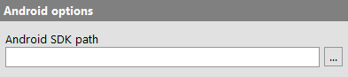
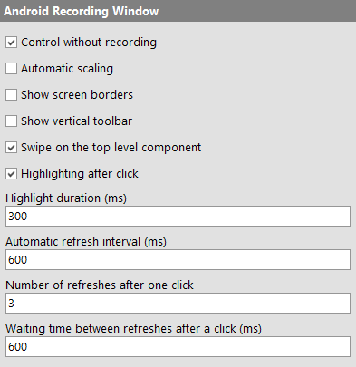

| Version 6.0.3 |
The following options influence the testing of Android applications.
|
|  | ||
|
| Figure 37.27: Options for Android | ||
Enter the installation path of the Android SDK here. This directory is usually named sdk and contains a subdirectory tools or cmdline-tools.
This setting is only neccessary if QF-Test can not determine the path automatically.
If this option is activated further information is logged in the log.
If this option is activated and an emulator was launched via the 'Launch Android emulator' node, then the stdout/stderr output of the launched emulator will be passed on to the QF-Test terminal.
The following options can be used to customize the look and functionality of the Android recording window.
|
|  | ||
|
| Figure 37.28: Options for the Android recording window | ||
If this option is set, clicks and other inputs in the Android recording window are passed on to the active device or emulator, even if the recording mode is not active.
If this option is set, the preview image in the Android recording window will be automatically scaled according to the window size.
Draws a Border around the edge of the virtual screen inside the Android recording window to make the edge clearly visible.
Inserts an additional toolbar at the edge of the Android recording window containing actions for controlling possible hardware buttons of the device. In recording mode, these are also recorded as events.
When the option is activated swipes will always be recorded on the top level component.
Due to differing screen sizes and resolutions of devices some components may not be located in the visible area. Then, swipes where the lower level component is not relevant may become unreliable. Especially for navigation swipes, the option can improve the recording.
When the option is set clicks to recording window will highlight the respective component, showing a colored border around it for a short time. This can be useful to check whether a click was interpreted correctly.
With this you control how long a border around a selected component should be displayed.
This controls how often QF-Test will try to refresh the contents of the Android recording window.
Please be aware that the maximum refresh speed depends on the device or emulator used. A interval value lower than the maximum refresh speed will not have any effect.
Too low values may negatively impact system performance.
The option defines the number of times the recording window will be updated after a click. The option is only relevant when automatic updating has been disabled.
Depending on the configurable animation speed of Android it can happen that the preview window may be updated whilst an animation is executed. In that case the option can be useful.
The option defines the time between two refreshes. The option is only relevant when automatic refreshing has been disabled.
Please be aware the maximum refresh speed depends on the device or emulator used. A interval value lower than the maximum refresh speed will not have any effect.
| Last update: 9/6/2022 Copyright © 1999-2022 Quality First Software GmbH |